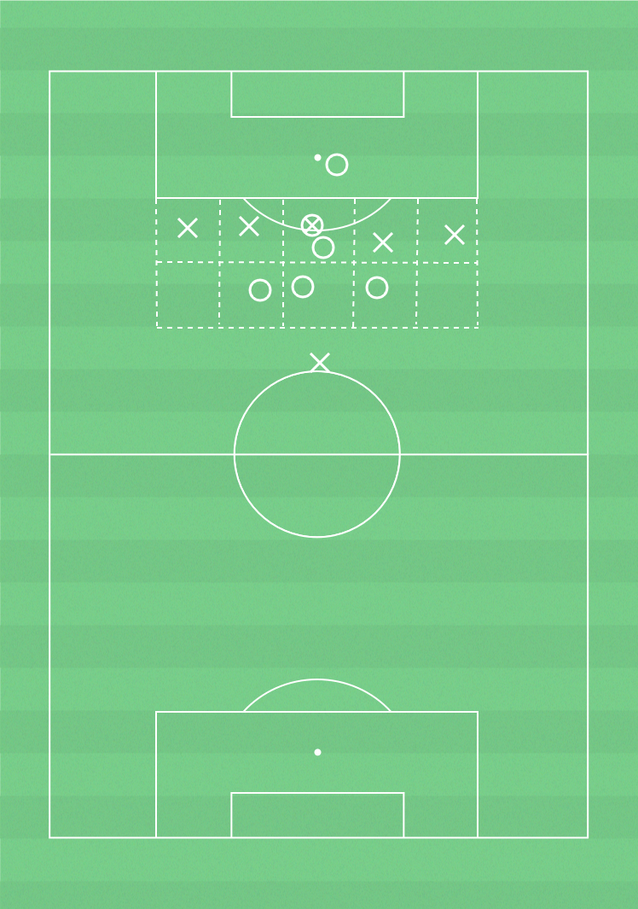

 ▶
▶
Förhindra speluppbyggnad
För att erövra bollen och förhindra mål.
Formation: 4-4-2
Arbetssätt Förhindra speluppbyggnad:
- Samla laget i lagdelar.- Förhindra spela genom lagdelarna.- Samla laget i de 3 korridorerna närmast bollen.
- Central spelare pressar mot central motståndare och kantspelare mot motståndarens kantspelare.- Täckande spelare med speldjup bakom den pressande spelaren.- Flytta över eller centrera så att de tre korridorerna närmast bollen täcks (pressande och täckande spelare i korridoren där bollen är) och de två korridorna längst ifrån bollen lämnas tomma.
10-14 spelare, yta 20x20 m, bollar, västar, konor
5 korridorer med 1 anfallare i varje.
4 försvara
re i en lagdel.
Jokrar bakom respektive kortsida som deltar i bollhållande lag.
Anfallarna har som uppgift att spela förbi försvarararnas lagdel till jokern bakom försvara
rna. Anfallarna får bara vara i sin korridor.
Förvararnas uppgift är att erövra bollen och spela till jokern bakom motståndarna. Försvara
rna får röra sig fritt mellan korridorerna.